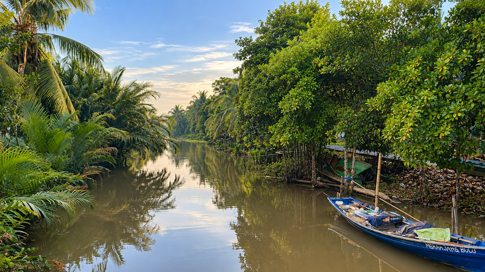
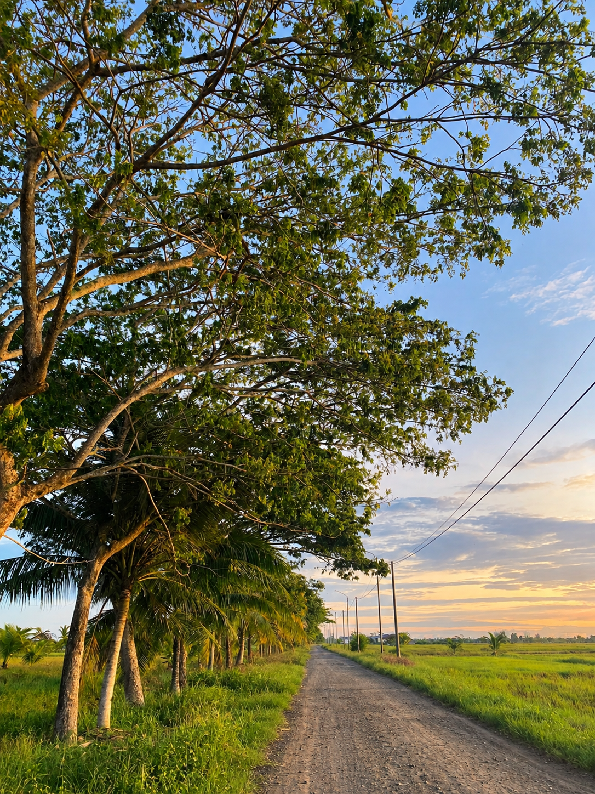
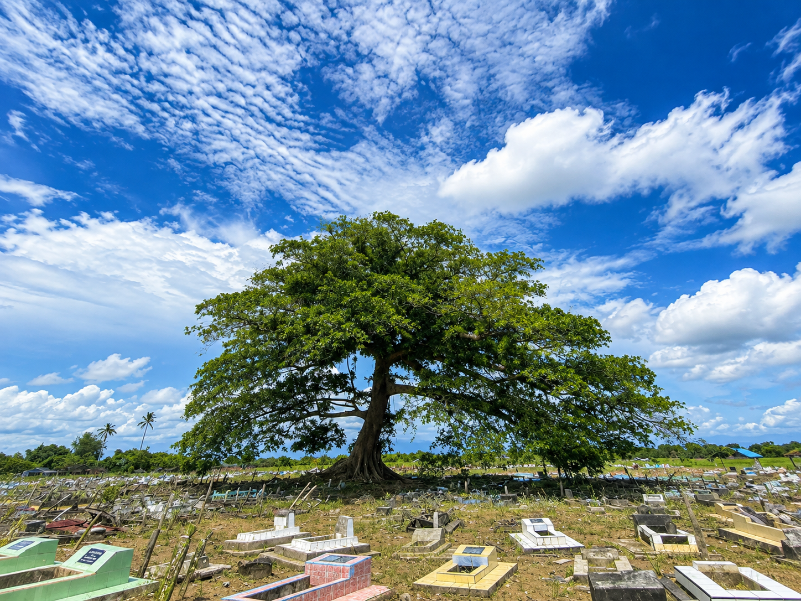
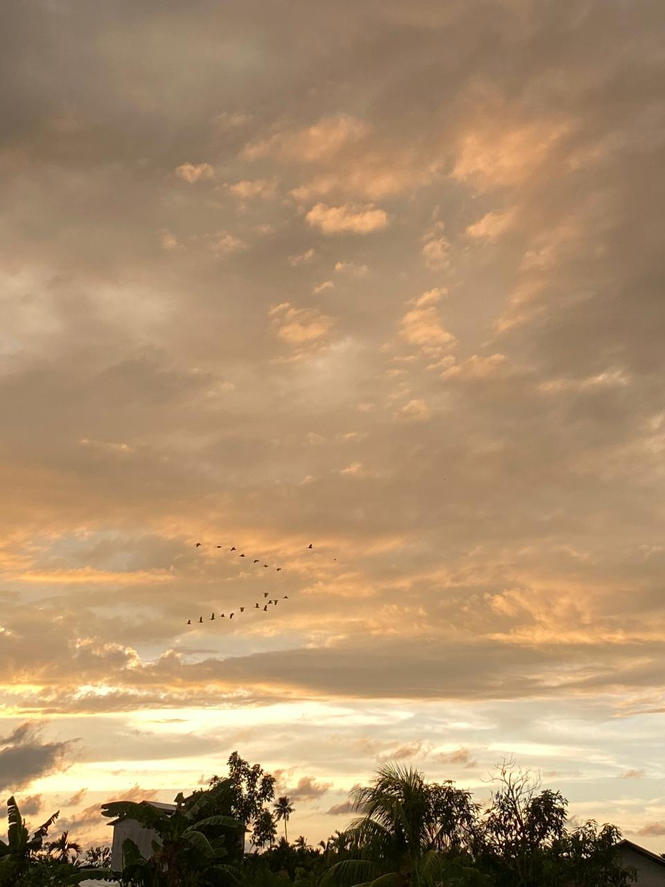

SUNGAI
Sungai dan Perahu
Sungai menjadi salah satu bagian dari keindahan alam desa. Air yang tenang dan perahu memberikan suasana khas pedesaan.
Hijau, tenang, dan menyegarkan.

Sungai menjadi salah satu bagian dari keindahan alam desa. Air yang tenang dan perahu memberikan suasana khas pedesaan.

Hamparan sawah yang hijau berpadu dengan cahaya senja, menciptakan suasana pedesaan yang tenang, alami, dan menenangkan.

Hamparan pepohonan yang menghadirkan suasana teduh dan alami di Desa Semparuk.

Jalan sederhana yang mengarah menuju area persawahan Desa Semparuk.

Pepohonan yang tumbuh di sekitar area pemakaman menghadirkan suasana teduh dan tenang sebagai bagian dari lingkungan Desa Semparuk.

Pemandangan langit sore dengan burung yang melintas di atas desa.